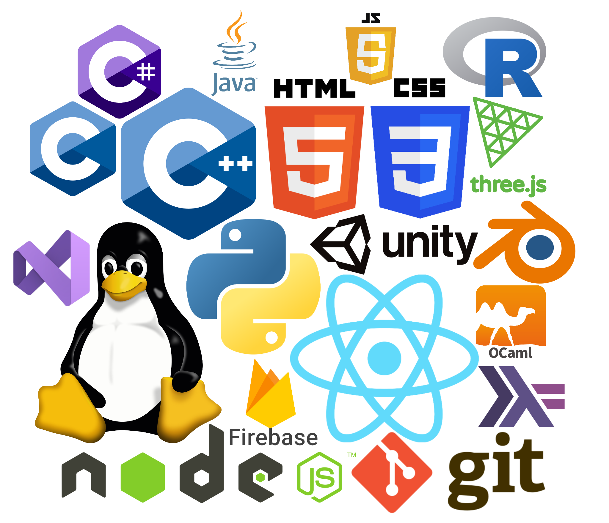
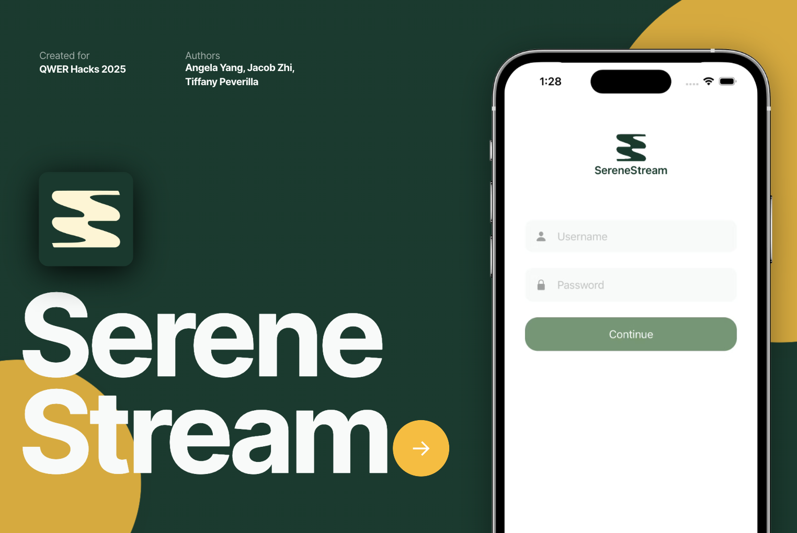
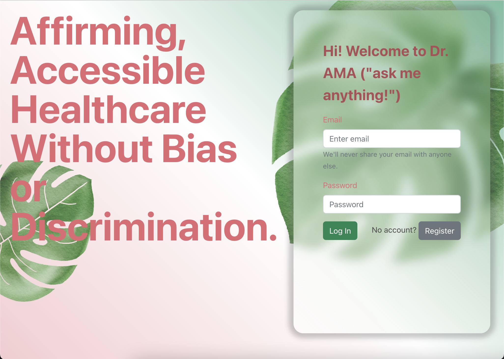
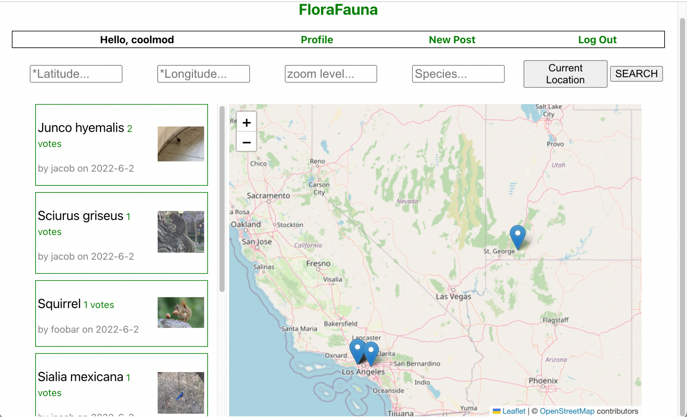
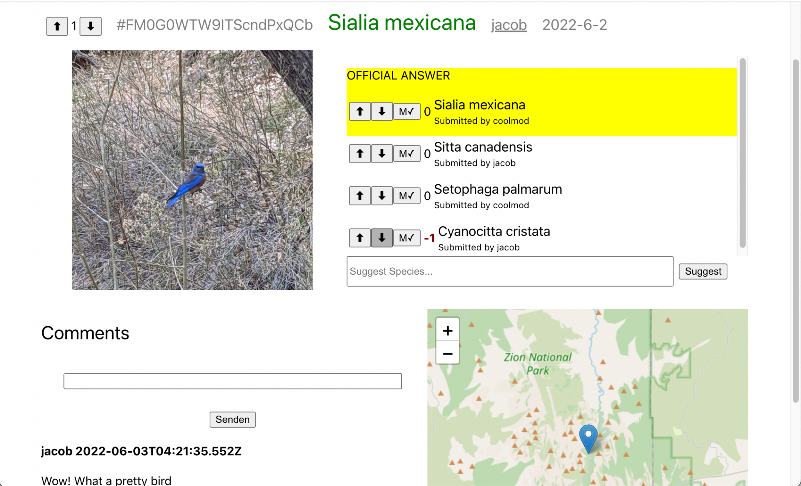
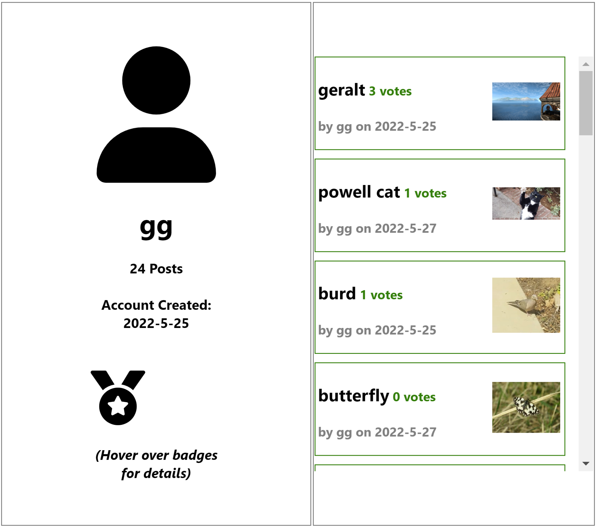

About Me
Hi, I'm Angela — a computer science and linguistics major at UCLA focused on building AI systems, especially around language. I work across applied ML: integrating LLMs, building embedding and retrieval pipelines, and training and deploying models behind real products. My linguistics background is an edge — it helps me reason about how language models actually behave, not just call them. Outside of engineering, you'll often find me drawing and crafting poetry; both of which you may discover if you linger on this site :).
Skills
Here's a bubble graph representation of my relative experience with each skill:

Code Portfolio
-
2/1/25 to 2/2/25 [Github]
Serene Stream encourages you to engage with their surroundings by recording sound bytes: bird calls, water features, leaf rustling, etc. After saving a few clips, these clips can be remixed with a chosen prompt into a personalized AI-generated lofi song. Each finished track is embedded as a vector and compared against anonymous tracks from all over the world, surfacing the ones most similar to yours — fostering a sense of connection between nature lovers everywhere.
Inspiration: nature has always been a balm for mental health — especially important for the LGBTQ community, which experiences disproportionately higher rates of depression and anxiety. We wanted to combine attachment to local greenspaces with investment in one's own mental health.
This project was an entry and first place winner in the 2025 QWER Hacks hackathon's Sustainability category, as well as winner for Most Creative and Best Use of Gen AI superlative prizes.
Devpost -
2/2/24 to 2/4/24 [Github]
PRideal World teaches bias-awareness by immersing users in interactive social situations powered by an LLM. For those outside the community, it's a place to unearth subconscious biases and learn how to support those around them; for LGBTQ visitors, the simulations can validate feelings of those who may have been in similar situations.
Full Video
The choice to use Large Language Models was deliberate: our LLM — who talks through Valour the Unicorn — gives personalized, nuanced feedback at scale, without requiring LGBTQ individuals to spend their own energy educating others. (Why the unicorn? It's a long-standing symbol of the community: acceptance, uniqueness, and unbridled — ha! — self expression.)
This project was an entry and third place winner in the 2024 QWER Hacks hackathon's Non-Traditional category, as well as winner for Most QWER superlative prize. -
3/5/23 [Github]
We wanted to see if we could use machine learning to teach the general populace, especially in a city as traffic-prone as LA, good driving habits and attitudes to prevent road rage incidents. RoadRager is a 2D-style game in which the user controls a vehicle behind another car, and must avoid driving too aggressively as weather and road conditions constantly change. A slider rates how aggressively they're driving: the driving data is streamed to a Google Cloud endpoint, where it's scored against a machine learning model of our own design, trained on real-world driving data.
Full Video
This project was an entry and the first place winner of Best Game in the HOTHX hackathon at UCLA. -
1/28/23 to 1/29/23 [Github]
Dr. AMA is a web-based medical chat app created to fight discrimination against the LGBTQ+ community. Dr. AMA allows users to create their own profile that fits with their social identity and medical needs while providing anonymity and safeguarding against bias. This is accomplished through a customizable avatar option and the freedom to choose the questions to answer and share on the health profile checklist that are more aligned with users' medical needs. Additionally, users have the option to choose which physician they would like to be treated by from Dr. AMA's diverse and inclusive registry of inclusivity-trained medical professionals, easing patients', especially those belonging to minority groups, comfort around physicians and ultimately improving patient-physician interactions. Once a physician has been selected, patients may chat and engage with the doctor without fear of discrimination.
This project was an entry and second place winner in the 2023 QWER Hacks hackathon's health category.
-
4/21/23 to 4/23/23 [Github]
Moon-Struck is a web application that enables couples who are in a long-distance relationship to stay in touch with each other and allows them to keep an active role in each others' everyday lives. Moon-Struck is focused on the “Home Away from Home” track, which is best showcased through a user's ability to see their partner's real-time weather updates, location, timezone information, and post-it notes. Through these windows into your loved ones' life, as well as quality-of-life features such as a menstrual calendar and a countdown to your reunion, Moonstruck allows people to feel as if they were with their partners in real life. Moon-Struck was built in the MERN software stack; specifically, we used MongoDB with Mongoose, Express, React, and NodeJS. This project was an entry in the 2023 LA Hacks hackathon.
Full Video -
2/8/22 to 12/10/22 [Github]
This project was a React Native mobile app commissioned by Dr. Edmund Tsui, a pediatrician at the Geffen Medical Center. It's intended use is as a self-monitoring symptom diary for his patients with juvenile idiopathic arthritis. I further developed on an existing static site and implemented authentication and registration capabilities.
-
4/6/23 to 9/30/23 [Github]
The Infant Speech App is a research software tool used to organize and search for phonetically-significant segments in large Pratt audio files. Phonetics research is expedited with this tool, as trends and patterns can be statistically gleaned from larger data sets. This was tested and optimized on a large Spanish database of infant speech, and currently being expanded to accomodate a more extensive English audio archive as well as mapped onto visual representations. This app was a commission project by the UCLA Language Acquisition Lab. It was built using Shiny R Studio.
Full Video Full Video -
3/5/22 to 6/10/22 [hosted here] [Github]
FloraFauna is a web-based application used to keep track of local flora and fauna species within a given geographic area. We built FloraFauna to provide an easily accessible, crowdsourced wildlife population database and tracking software for researchers and hobbyists alike. Users post and interact with sightings (pictures) of flora and fauna. FloraFauna was a group term-project for the Software Construction course at UCLA.



Socials